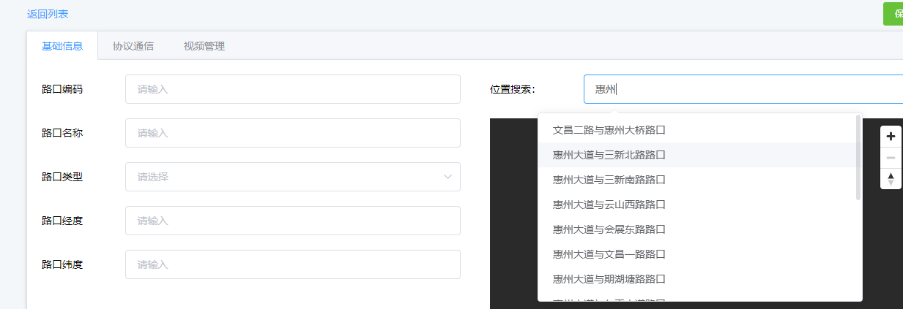
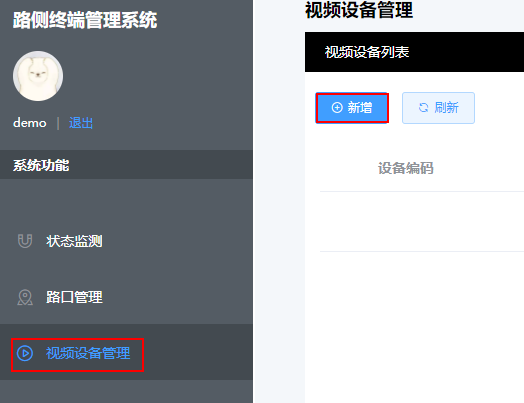
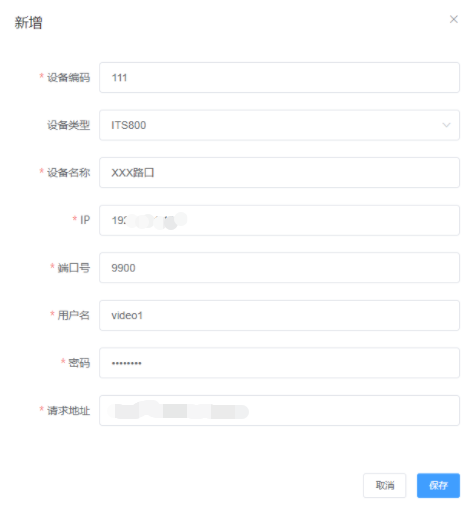
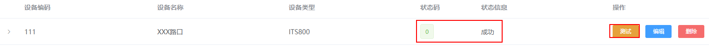

视频对接
对接操作
- 访问图盟“路测终端管理系统”（https://【地址】/admin/#/login）
- 点击“路口管理”，点击“添加”。在右侧“位置搜索”搜索并选择当前路口名称。在左侧“基础信息”页签选择“智慧路口”后，会自动识别路口编码等信息。
图1 添加路口

- 单击“视频设备管理”，点击“新增”
图2 添加视频设备

- 配置如下:
- 设备编码：用户自定义
- 设备类型：ITS800
- 设备名称：用户自定义
- IP：ITS800设备IP
- 端口号：推荐9900
- 用户名：准备材料中新增用户的用户名
- 密码：准备材料中新增用户的密码
- 请求地址：https://IP:18531 （IP为ITS800设备IP）
图3 新增视频设备

- 单击“保存”，单击“测试”，若返回“状态码：0，状态信息：成功”，则对接成功。
图4 视频对接成功

- 进入“路口管理”，编辑对应的路口，点击“视频管理”，选择关联ITS800设备。如图5所示。
- 单击“添加”进入编辑界面。
- 将摄像机与方向匹配。
- 添加摄像机位置，如图6所示。
- 鼠标右键点击地图添加坐标点，添加设备作用域。如图7所示。
- 单击“保存”。
- 重复执行7、8，将所有摄像机和方向逐一匹配。如图8所示。
- 配置完毕，等待20秒后，查看状态栏中的各个方向相机状态是否正常。如图9所示。
功能验证
- 访问并登陆图盟“路口全息监测系统”（https://【IP地址】）。
- 选择路口，进入实时监测界面，单击界面右侧“路口视频”，选择已对接成功的方向，如图10所示。